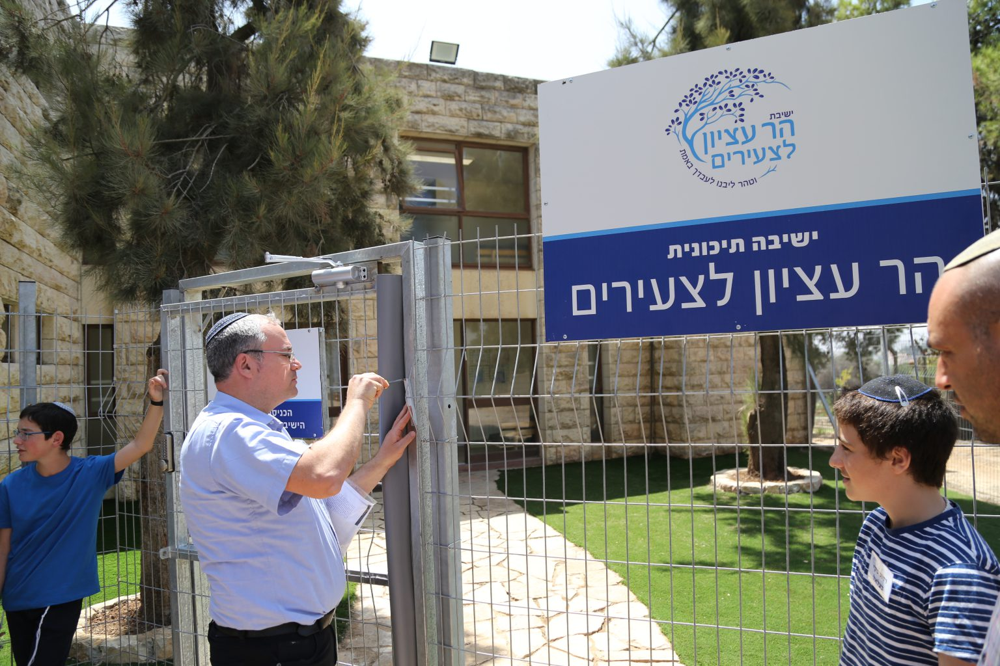

ישיבה תיכונית פנימייתית שנולדה מתוך בית המדרש של ישיבת הר עציון, כדי להעמיד דור צעיר של לומדי תורה בעלי אישיות, רוחב דעת ושמחה.
ישיבת הר עציון — "ישיבת הגוש" — הוקמה בשנת תשכ"ט בצריפי כפר עציון בראשות הרב יהודה עמיטל זצ"ל, ועברה לאלון שבות מול "האלון הבודד". לצידו עמד בראשות הישיבה הרב אהרן ליכטנשטיין זצ"ל, וביחד העמידו אלפי תלמידים, רבנים ואנשי חינוך.
בשנת תשפ"ג החליטה הנהלת הישיבה להקים ישיבה תיכונית "על בסיס רוחה ועוצמתה של ישיבת הר עציון", בשיתוף המועצה האזורית גוש עציון והמכללה האקדמית הרצוג — לנערים מגוש עציון ומרחבי הארץ.

הרב יהודה עמיטל וקבוצת תלמידים מתיישבים בצריפי כפר עציון.
ראשי ישיבת הר עציון — הרב יעקב מדן, הרב ברוך גיגי והרב משה ליכטנשטיין — חותמים יחד עם ראש המועצה ונשיא מכללת הרצוג.
המחזור הראשון נכנס לבית המדרש באלון שבות, בראשות הרב עמיחי גורדין.
בט"ו באייר מונחת אבן הפינה לבית המדרש החדש, על שם שי אוריאל פיזם הי"ד.
בית המדרש החדש נחנך בטקס חגיגי עם הכנסת ספרי תורה, תפילה, שירה וריקודים.
ישיבה צומחת עם בית מדרש מלא, פנימייה תוססת ומגמות לימוד מגוונות.
אנו שואפים להישגים חינוכיים במגוון תחומים: התפתחות הנפש ובריאות הגוף, שלמות הרוח והתעלות הנשמה, דרך ארץ שקדמה לתורה, יראת שמים ואהבת תורה, רוחב דעת ולימודי חול ברמה גבוהה. אבל על ראש שמחתנו נעלה את לימוד התורה.
באופן ברור משתמעת מכאן העדפה של לימודי הקודש על פני תחומי ידע אחרים, חשובים ככל שיהיו. אנו שואפים לחנך את תלמידינו לאהבת תורה. אנו מאמינים שאהבת תורה אינה צריכה להחליף לימוד רציני ומעמיק, אלא להפך: להתבטא בלימוד כזה. לימוד רציני מתוך נחת רוח ושמחה.
לימוד גמרא הוא מעצם טיבו דיאלוגי ומשתף. אין הוא מתיישב היטב עם התבנית של שיעורים פרונטליים ארוכים, והוא מיטיב להתיישב על הלב ועל הדעת כאשר הלומדים הצעירים פעילים באופן אקטיבי בהבנה ובלימוד.
חיי פנימייה הם הזדמנות פז לבניית אישיות חברתית המעורבת עם הבריות, אישיות בעלת רגישות חברתית לזולת, הנבנית מהחברה שסביבה והבונה אותה.
בחשיבה חינוכית נכונה ומוקפדת, בעזרת צוות טוב ואיכותי, ובראש ובראשונה בעזרת ה', אנו ממשיכים מתוך אמונה גדולה להפוך את ישיבתנו לישיבה גדולה שיצאו ממנה בעז"ה אנשים צעירים שכולנו נשמח באישיותם ובתורתם.
ישיבת האם באלון שבות — מורשת של לימוד בדרך העיון, תנ"ך ומחשבה מתונה.
ליווי פדגוגי עמוק ועשיר מהמכללה הגדולה מסוגה בישראל.
שותפה להקמת הישיבה ולחיבורה לקהילות הגוש.